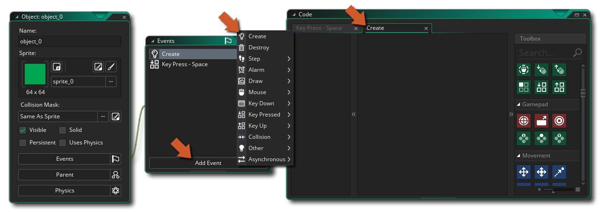

要将行为添加到objects ，你可以使用动作工具箱中不同库的动作 来构建你的代码。首先，你需要建立一个新的GML Visual项目，然后建立一个新的对象（如果需要，你也可以给object 分配一个精灵）。在你的新object ，你可以开始添加 events，并在事件中添加你的GML Visual代码动作。
注意，当你添加一个新的事件时，一个 "代码 "窗口会被打开，其中有一个给定事件的标签（见上图），你现在可以从右边的工具箱中拖动任何你想要的动作到代码窗口的动作块窗格中。现在，虽然你确实可以添加任何动作，但这并不意味着它们都能工作，也不意味着项目会用它们进行编译。有些动作需要至少一个变量才能工作，而其他动作--如绘图动作--只有在特定事件中使用才能工作。你怎么知道要使用哪些动作？嗯，一般来说，这只是一个使用逻辑的问题......如果一个动作需要一个变量，而我们还没有定义一个变量，那么我们就不应该使用它，直到我们添加一个动作来创建这个变量。
当你从工具箱中拖动一个动作到主动作块workspace ，它将展开显示可用的参数（参数），你可以填入并改变这些参数来设置行为。在下面的图片中，我们从工具箱的公共库中拖动了一个分配变量的动作到动作块工作区。
你可以看到，新的动作也以速记的形式显示在代码窗口的左边。这个动作列表被称为动作概览，可以点击它来快速导航到该动作进行编辑。如果需要，你可以继续向事件添加动作，每个新动作都与前一个动作 "连锁"，以显示你正在构建的GML Visual代码的流程。请注意，在初始动作的下方，你可以添加其他动作的区域被高亮显示，而且，根据你使用的动作，不同的区域会高亮显示你可以在链中添加它。
当你把动作添加到workspace ，它们将被 "连锁 "到上面的动作，所以你可以看到GML Visual代码是如何流动的，一个动作导致另一个动作，概览窗格以速记的形式和执行的顺序显示它们。
有些动作将把代码放在远离主流程的单独链中--像If Variable这样的东西将创建一个动作子链，如果满足正确的条件，在继续主链之前就应该发生。
请注意，当使用像这样可以有侧链块的动作时，该动作会有两个 区域高亮显示，用于丢弃进一步的动作。
你可以通过简单地点击
，并把它们拖到你所需要的新位置，来改变动作在链内的位置。如果你做一个点击
，并保持一秒钟，然后移动鼠标，你可以在workspace ，同时保持它在动作块链内的位置。
还可以在GML 视觉行动中添加注释，因此你可以在不同的块旁边留下注释，解释它们的作用（这在团队工作中特别有用）。
你可以从 "鼠标右键菜单"的页面上了解到更多关于这个功能的信息。
这就是使用GML Visual代码编辑器的基本情况，但还有一些重要的细节在下面的章节中解释。
值得注意的是，许多行动提供了一个 "目标 "变量，例如，可以标记为 "临时"。
这意味着你可以提供一个变量，这个变量是保存动作返回值的目标。在上面的例子中，动作将返回你选择的音频资源的音量，所以你提供了一个目标变量来保持这个值，以便你以后可以引用它。
现在，这个目标变量需要事先使用Assign Variable（创建一个实例变量）或DeclareTemporary Variable（创建一个本地临时变量）进行声明。如果你选中了 "Temp "选项，那么你可以简单地添加一个变量名，动作将创建该变量并将其设置为保存返回值（创建一个本地临时变量）。此后使用的任何动作现在都可以访问临时变量中的值，但只能在同一事件或脚本中使用。临时变量只能在它们被创建的范围内使用。关于变量和变量范围的更深入的信息，请看这里。
不仅变量有作用域（见上面的目标变量 部分），动作也可以有不同的作用域。事实上，几乎所有的动作都可以被赋予一个不同的作用域，从动作本身打开的下拉窗口中设置，如图所示。
你还可以使用特殊的动作Apply to为所有进一步的动作设置范围。关于GML 视觉动作的这一特点的更多信息，请看这里。
在使用GML Visual时，你将不得不把变量和表达式添加到动作的不同输入字段中。然而，当你这样做时，你会经常弹出自动完成窗口来帮助你。
这个弹出的窗口将列出所有内置的GML (GameMaker Language) 变量、常量和函数，以及任何包含你所输入内容的首字母的资源。它可以用来快速找到你想要的资源或变量，而不必自己全部输入。例如，如果你的所有rooms 的前缀是 "rm_"，那么键入该词并等待片刻，就会在自动完成窗口中显示所有以 "rm_"开头的assets 。请注意，所有显示在自动完成窗口中的内置变量都可以在行动中预期的变量或表达式的任何地方使用，大多数GML 函数也是如此。
有时在使用一个动作时，你会看到边上有一个小的加号图标 。这意味着你可以扩展该动作以执行额外的任务或接受更多的参数。例如，如果你看一下声明临时变量的动作，你可以看到它有这个图标。
当你点击该图标时，该动作将展开 并允许你声明更多的变量，使你更容易和更快地同时定义多个变量。
该图标也可用于那些需要可选的 参数的动作，如选择动作，它允许你添加各种不同的值来返回。
